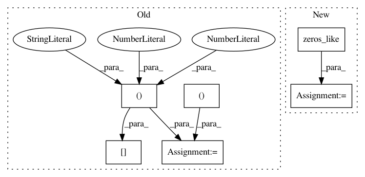

45a10bc6d708fade197a37bfbc62312caf70e6a7,keras/layers/convolutional_recurrent.py,ConvLSTM2D,get_constants,#ConvLSTM2D#Any#Any#,438
Before Change
constants.append([K.cast_to_floatx(1.) for _ in range(4)])
if 0 < self.recurrent_dropout < 1:
ones = K.ones_like(K.reshape(inputs[:, 0, 0], (-1, 1)))
ones = K.tile(ones, (1, self.filters))
def dropped_inputs():
return K.dropout(ones, self.recurrent_dropout)
rec_dp_mask = [K.in_train_phase(dropped_inputs,
After Change
def get_constants(self, inputs, training=None):
constants = []
if self.implementation == 0 and 0 < self.dropout < 1:
ones = K.zeros_like(inputs)
ones = K.sum(ones, axis=1)
ones += 1
def dropped_inputs():
return K.dropout(ones, self.dropout)
In pattern: SUPERPATTERN
Frequency: 3
Non-data size: 6
Instances
Project Name: keras-team/keras
Commit Name: 45a10bc6d708fade197a37bfbc62312caf70e6a7
Time: 2017-02-17
Author: francois.chollet@gmail.com
File Name: keras/layers/convolutional_recurrent.py
Class Name: ConvLSTM2D
Method Name: get_constants
Project Name: keras-team/keras
Commit Name: c1a72b36444c8027c27c2dc02dc03d5b69a5e389
Time: 2016-10-13
Author: jeanmichel.arbona@gmail.com
File Name: keras/layers/recurrent_convolutional.py
Class Name: LSTMConv2D
Method Name: get_constants
Project Name: keras-team/keras
Commit Name: 9efe17aeeafc6d8c1406a48f82fc63731d4b2b6c
Time: 2016-02-29
Author: francois.chollet@gmail.com
File Name: keras/layers/recurrent.py
Class Name: Recurrent
Method Name: get_initial_states